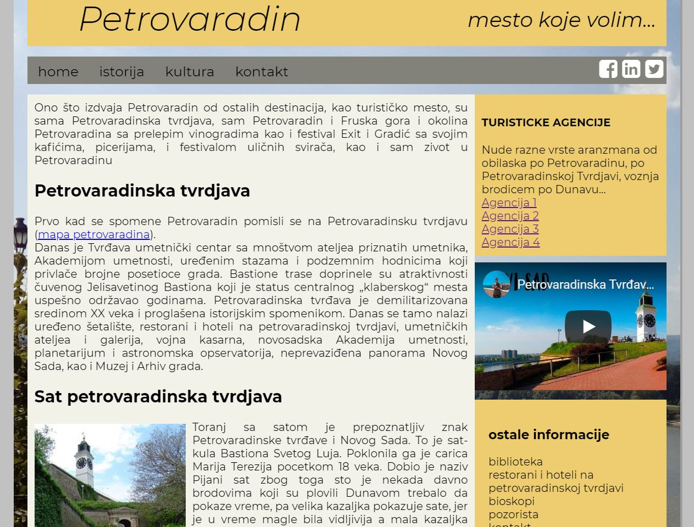

No. 2 Web sajt "Veterinar",je zamišljen kao blog, izrađen u Wordpress-u. Sajt pruža informacije o životinjama, njihovom ishranom, higijeni, bolestima i lečenju, dresuri i još mnogo toga.
No. 3 crtež kuće u šumi
No. 4 naslovna strana magazina
No. 5 Predstava "Čikaške perverzije" zapravo pričaju o ljubavi, o prijateljstvu, o odnosima između žena i muškaraca. A to su teme za sva vremena. S obzirom da sama predstava obiluje smehom i bojama prirodno mi se nametnulo da i sam plakat bude veseo i pun boja. Plakat napravljen u Adobe Photoshop-u.
No. 6 Plakat za predstavu "San letnje noći", Sheakspirova romantična komedija u kojoj ljubav ima glavnu ulogu, a prepoznatljiva je u čarima koje donosi jedna letna noć. Upravo je ljubavnom radnjom, motivima sna i Ivanjske noći Šekspir dočarao osećaj letne noći koja u likovima budi ljubav. Predstava u kojoj san ima simboličko značenje, odnosno pomaže likovima u donošenju važnih životnih odluka. Plakat izradjen u Adobe Photoshop-u.
No. 7 Web sajt o školi stranih jezika, napravljen u Adobe Dreamweaver-u. Škola svojim polaznicima pruža časove engleskog, nemačkog i francuskog jezika, tu su informacija o vrsti kursa, sertifikatima, cenama i ostalim potrebnim informacijama

No. 8 Web sajt "Moj Petrovaradin" osmišljen je kao sajt koji će pružati informacije o samom mestu njegovoj istoriji i trenutnoj situaciji, kao i o dešavanjima u gradu koje predstoje poput Exit festivala, festivala uličnih svirača, bioskopi, predstave...Sajt je izradjen u Adobe Dreamweaver-u.